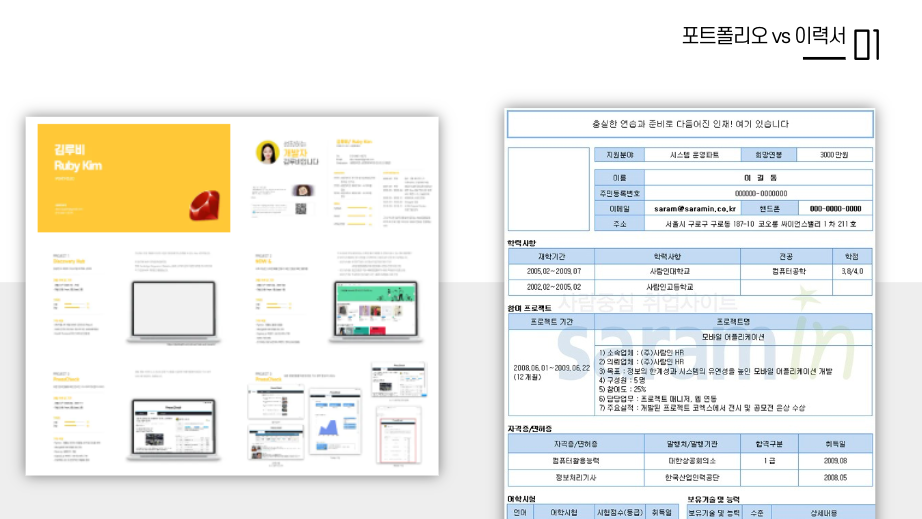
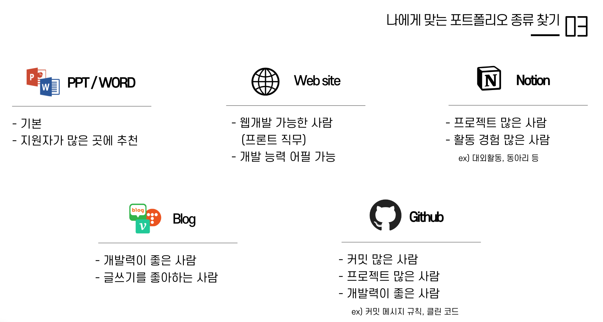
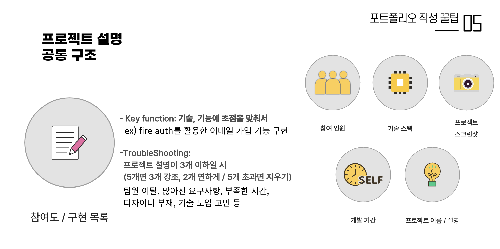
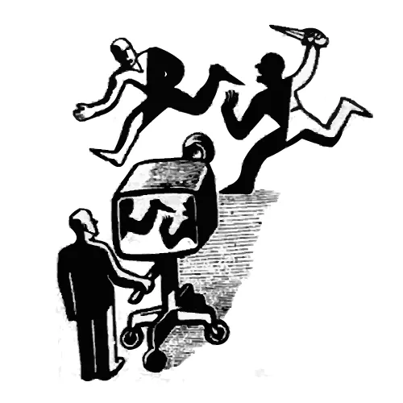

내부 사정으로 영상으로 올리려던 것을 블로그 글로 업로드 했습니다.
PPT는 따로 배포하지 않는 점 참고 바랍니다.
여러분의 취준 & 이직에 도움되길 바랍니다 :)
1. 📁 포트폴리오 vs 이력서

이력서와 포트폴리오를 차이점을 은근 헷갈려하는 경우가 많아 간단히 적어보자고 한다.
이력서는 지금까지의 경력, 학력, 스킬 등을 “텍스트”로 표현하는 것이고,
포트폴리오는 “이미지” 중심으로 해온 프로젝트를 자세하게 표현한다고 생각하면 된다.
2. 💡 포트폴리오의 필요성 및 중요성
대부분 기업에서도 포트폴리오는 필수는 아니며 선택 사항으로 언급되는 경우가 많다.
그래서 준비가 귀찮거나 시간이 부족한 사람들은 포트폴리오를 따로 준비하지 않아도 된다.
하지만 포트폴리오를 준비하는 것이 입사 경쟁에 있어 매우 유리할 수 있다.
나날이 갈수록 청년 취업률은 떨어지고 있으며, 수많은 지원자들 속에서 조금이라도 눈에 띄기 위해서는 단순히 이력서에 나열된 경력이나 자격증만으로 부족한 때이다.
포트폴리오는 자신의 경험과 역량을 실제 사례를 통해 시각적으로 보여줄 수 있는 도구로, 지원자가 어떤 방식으로 문제를 해결하고 창의적인 접근을 했는지 구체적으로 드러낼 수 있다.
특히, 직무 관련 프로젝트나 작업물을 포트폴리오에 포함시키면, 고용주(=회사)는 지원자가 해당 분야에서 실제로 어떤 성과를 낼 수 있는지 보다 쉽게 이해할 수 있으며,
이는 단순히 글로 표현된 능력보다 훨씬 강력한 인상을 줄 수 있고 지원자의 실무 능력을 한눈에 확인할 수 있게 해준다.
결론적으로, 포트폴리오는 자신을 돋보이게 만들고, 경쟁자들 속에서 두드러지는 기회를 제공하는 중요한 수단이기에
귀찮더라도 포트폴리오를 준비하는 것이 더 나은 취업/이직 기회를 만들 수 있는 좋은 전략이 될 수 있다.
3. 📚 나에게 맞는 포트폴리오 종류 찾기

기업마다 제출 형태는 다르지만, 내 경험에 의하면 보편적으로 이렇게 다섯 종류로 나뉘는 것 같다.
특히 대기업 공채일수록 정해진 포맷(ex. ppt, docs 등)에 맞춰서 내라는 경우가 많은데, 이때 꼭 기업에 만든 파일을 이용해서 제출하도록 하자.
(일부 기업들은 기업 내부에서 알고리즘 돌려서 서류 필터링을 한다는데, 대기업일수록 이런 포맷이 정해져 있다보니 안맞추면 알고리즘에 걸려 필터링에 걸릴 수 있기 때문이다.)
4. 🔍 포트폴리오 작성 꿀팁
1) 프로젝트 설명 공통 구조

- 어떤 포트폴리오 템플릿을 선택을 했든, 프로젝트를 잘 표현하기 위해서는 이 내용들이 꼭 들어가야 한다.
- 그 중에서 가장 중요한 것은
참여도 / 구현 목록이다.- 주니어 개발자일 경우, 이미지를 참고해 작성해보자
- 경력직일 경우, 이직을 위한 포트폴리오 작성 시
기능 향상방향으로 작성하는 것을 추천한다. (물론 주니어일수록 이렇게 작성할 수 있다면 더 좋다)- 구체적인 수치로 작성하기, 될 수 있으면
%이용하기- API latency가 100ms였던 것을 50ms로 향상시킴 -> 코드 리펙토링을 통해 API latency를 50% 감소
- 클라우드 아키텍처 재설계로 비용이 월 1000만원인 것을 100만원으로 감소 -> 클라우드 아키텍처 재설계로 비용을 90% 감소
- 사용한 라이브러리 및 문제 해결 과정 제시
- 코드 샘플 작성 및 삽입
- 아키텍처 다이어그램 삽입
- 구체적인 수치로 작성하기, 될 수 있으면
2) 지인 평가: Soft Skill 강조하기
3) 오픈소스 기여하기
아무래도 다른 나라에 비해 한국에서 오픈소스를 기여하는 사람을 찾기 힘들다.
이 말은 뭐다? 오픈소스에 기여하면 다른 사람들과 비교해서 차별성 있는 스펙을 만들기 딱 좋다는 얘기다. (개인적으로 스펙쌓기 활동 중에 가장 알차다고 생각한다)
어차피 대기업에서 스타트업까지 모든 기업에서는 오픈소스를 적극 활용하는 편인데, 그 오픈소스를 기여하고 유지보수할 수 있음을 증명한다면 기업에서 여러 러브콜을 받을 수 있을 것이다.
그 외에 오픈소스를 기여 시 다음의 장점을 누릴 수 있다:
- 협업 능력 증명
- 오픈소스는 전 세계의 다양한 개발자들과 협업하는 형태로 진행되며, 협업 도구(ex. Git, Github 등)와 작업 흐름에 대한 이해도를 보여준다.
- 즉 다른 사람들과의 원활한 커뮤니케이션 능력을 증명할 수 있게 된다. (= soft skill로 연결됨)
- 코딩 실력과 코드 품질 보증 가능: 작성한 코드에 대해 검토 및 피드백을 받을 수 있으며, 이를 통해 코드 품질을 개선하고 더 나은 개발자로 성장할 수 있다.
- 문제 해결 능력: 버그 수정 및 새로운 기능 추가 과정에서 문제 분석 및 해결 능력을 보여줄 수 있다.
- 전문성 강화: 기여하는 오픈소스 주제가 지원하고자 하는 분야와 관련있으면, 그 분야에서의 전문성을 증명할 수 있다.
오픈소스 기여 방법은 [여기](추후 링크 추가 예정)를 참고하면 되며, 여기서는 오픈소스 프로젝트를 지원하는 프로그램을 적어보고자 한다.
어차피 오픈소스에 기여할거면 ✨간지나게✨ 하는게 좋지 않은가 ㅎㅎ
여러 가지 프로그램이 있는데, 그 중 가장 추천하는 프로그램은 바로 NIPA에서 운영 중인 오픈소스 생태계 지원 사업이다.
5. 📁 FAQ
현재도 다양한 SW 프로그램에서 멘토로 활동하고 있는데, 취업 관련해서 많이 들어오는 질문들을 한 번 정리해보았다.
Q1. 포트폴리오에서 가장 도움 됐던 활동은?
아무래도 `대회 수상 내역` 및 `프로젝트`가 가장 도움이 됐던 것 같다.다만 이 두 가지 조건을 충족하면 매우 좋겠지만, 모두 알다시피 현실이 그렇게 녹록치 않다.
따라서 나는프로젝트는 필수로 들고가고,대회 수상 내역은 선택적으로 가져가는 것을 추천한다.
(개인적으로 전공 비전공을 떠나, 대회 수상 자체는 95%의 운과 5%실력이 있어야 한다고 생각한다)
Q2. 직무와 관련 없는 프로젝트를 포함해도 될까?
(ex. 백엔드 직무 - 프론트, c언어 관련 프로젝트)
무조건 빼야한다. 넣어도 어차피 안본다.
포트폴리오는 자신의 역량을 보여주는 도구이기 때문에, 이 때 자기 어필을 제대로 하지 못할 경우 요즘 기고 나는 개발자 지망생들에게 묻히기 십상이다.
Q3. 포트폴리오 만들면서 전공과목(알고리즘, 데이터베이스 등) 학습법
이런 말이 있다. 칼을 썰면 무라도 썰자. 그냥
프로젝트를 하면 된다.
물론 맨 땅에 헤딩이라고, 프로젝트를 들어가면 ‘그래서 난 도대체 뭘 해야하지’라며 갈팡질팡하는 경우가 많다.
만약 내가 프로젝트를 전혀 해본 적이 없거나 시작점을 못찾겠다 싶으면 유튜브나 블로그, 각종 학습 사이트에 업로드된 프로젝트를 클론코딩 해보자.
그게 어느 정도 익숙해졌다면 그 때부터 원하는 주제로 프로젝트를 진행하면 된다. 그러면 자연스럽게 컴퓨터 공부를 할 수 있다.다만 알고리즘은 따로 공부가 필요하다. 기업연계가 아닌 이상 한정된 데이터를 가지고 작업을 해야하기 때문에, 우리가 생각하는 알고리즘들을 구현할 기회가 거의 없을 수 밖에 없다.
Q4. 프로젝트 수준은 어디까지?
될 수 있으면
실서비스(배포)까지 하는 것을 추천한다.요즘은 포트폴리오 준비를 국비지원(KDT)에서 많이 하는데, 여기서 서버비용까지 지원해주고 있기 때문에 서비스 배포까지 하는 경우가 굉장히 많다. 이는 곧 시간이 갈 수록 스펙이 상향조준 된다는 의미며, 평범하게 했다가는 남들에게 치여 뽑히지 못할 가능성이 크다(…)
개인적으로 주니어 개발자라면 배포까지는 너무 오버스펙이라 생각하지만… 어쨌든간에 다른 경쟁자들 사이에서 남다른 모습을 보이기 위해서는 못해도 중간은 해야하기 때문에, 될 수 있으면 배포까지 하는 것을 추천한다.
Q5. 개발자는 학력을 안 본다는 말이 맞는가?

개인적으로 지금 적고 있는 FAQ중 모든 사람들이 이 질문은 꼭 봐줬으면 싶다.
아니다. 본다.무조건 본다.기업 공식 블로그나 KDT 입사 사례, 유튜브같은 곳을 보면, “비전공자인데 개발직군으로 취뽀해서 초봉 6000이상 받아요~”하는 내용을 쉽게 볼 수 있다.
이 사례들은 많은 비전공자들에게 희망을 주기도 하지만, 동시에 일부만 보고 전체를 판단하는 오류를 범하게 할 수 있다.
다들 은연 중에 알고 있을 것이다. 왜 이런 것들이 눈에 들어오는가. 바로 비전공자가 전공자랑 싸워서 개발직군에 취뽀한다 라는 것 자체가 굉장히 어렵기 때문이다.기업 입장에서야 “우리는 전공/비전공을 가리지 않고 실력이 있으면 뽑습니다”라는 메시지를 전달하려는 의도로 만들었겠지만,
현실적으로 전공자는 다양한 교수님 및 전문 커리큘럼을 통해 체계적인 교육을 받을 기회가 많고, 비전공자는 이러한 리소스가 부족해 더 큰 노력이 필요한 편이다.
따라서 단순히 미디어에서 본 성공 사례만을 보고, 특히 비전공자 일수록 아무 노력도 하지 않았음에도 불구하고 ‘나도 저렇게 될거야’라고 희망만 가지다간 큰 낭패를 볼 수 있다.그렇다면 개발자가 되기 위해 SW로 뛰어 든 비전공자들은 어떻게 해야하냐,
공부 기록을 남기면 된다.
위에도 적었지만, 전공자들은 전문가에게 전문 커리큘럼으로 컴퓨터 공부를 하기 때문에 상대적으로 유리한 입장일 수 밖에 없다.
그리고 이 스펙은 ㅇㅇ대학교 컴퓨터공학과 졸업 같은 형식의 단 한줄로 압축해서 설명할 수 있는데 이것 또한 유리하게 적용될 수 밖에 없다.
한정된 글자수/페이지 내에서 자신이 할 수 있는 것들을 여러 개 나열해야 하는데, 비전공자일 경우 ‘이런 것을 했습니다’를 나열할 때
전공자는 ‘학과 졸업’ 하나로 기본적인 컴퓨터 공부를 했다는 것을 입증할 수 있으며 남은 공간에는 자기어필을 더 할 수 있기 때문이다.즉, 비전공자들은 전공자들의 졸업 타이틀에 비빌 수 있는 스펙을 만들어놔야 기업에서도 수용을 하는데, 이러한 성과를 입증하는 방법은 결국
무조건 기록밖에 없기 때문에 무엇을 배우든 기록을 남기는 것을 추천한다.말이 길어졌는데 정리하자면,
- 기업은 (당연하게도) 입증된 인재를 뽑길 원하며
- 공부 기록이 없는 이상 전문과정을 밟았음을 확실히 증명할 수 있는 전공자들이 유리한 것이 당연지사이다.
- 따라서 학력은 무조건 본다고 생각하면 된다.
- 비전공자일수록 전공자와의 격차를 줄이기 위해서
공부기록을 남기는 것을 추천한다.
Q6. 취준은 언제부터 해야하는가?
이 글을 보는 당장 시작하는 것을 추천한다.
미리 자기소개서, 프로젝트, 포트폴리오, 코딩테스트 등을 준비해봐야 나중에 봤을 때 뭐가 부족한지 판단하고 앞으로의 계획을 수월하게 세울 수 있기 때문이다.
이 블로그 말고도 인터넷에 좋은 내용들이 많기 때문에, 인터넷을 뒤져보고 주변 강연에도 참여해보면서 자신만의 스펙을 어떻게 뽐낼 수 있을지 충분히 고민하는 시간을 가졌으면 좋겠다.
6. 🍀 마지막 하고 싶은 말
- 포트폴리오는 제발 겸손하게 작성하지 말자. 아주 유능한 것처럼 꾸미자
- 빠를수록 손해볼게 전혀 없다. 미리미리 준비하자. 뭐라도 미리 해놔야 나중에 봤을 때 고칠 수 있기 때문이다
![[오픈소스] 2024년 8월 오픈소스 소식지 (2)](../../../../../coverImages/github.png)